RACE数据集相关文献
目录
- 目录
- 文献整理
- 第一篇
- 第二篇
- 第三篇
- 第四篇
- 补充
文献整理
要求
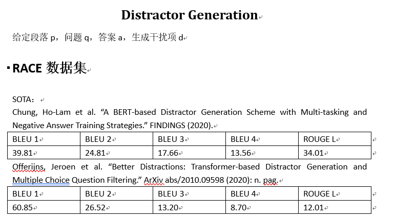
搜集到相关文献标题和地址
- A BERT-based Distractor Generation Scheme with Multi-tasking and Negative Answer Training Strategies
- Better Distractions: Transformer-based Distractor Generation and Multiple Choice Question Filtering
- Generating Distractors for Reading Comprehension Questions from Real Examinations
- Co-attention hierarchical network: Generating coherent long distractors for reading comprehension
- Automatic Distractor Generation for Multiple Choice Questions in Standard Tests
- Distractor Generation for Multiple Choice Questions Using Learning to Rank
- Knowledge-Driven Distractor Generation for Cloze-style Multiple Choice Questions
第一篇
Title
A BERT-based Distractor Generation Scheme with Multi-tasking and Negative Answer Training Strategies
Author
Ho-Lam Chung, Ying-Hong Chan, Yao-Chung Fan
Abstract
现有的DG1局限在只能生成一个误导选项，我们需要生成多个误导选项，文章中提到他们团队用multi-tasking和negative answer training技巧来生成多个误导选项，模型结果达到了学界顶尖。
Introduction
DG效果不好，文章提出了两个提升的空间：
- DG质量提升：
BERT模型来提升误导选项质量 - 多个误导选项生成： 运用了覆盖的方法来选择distractor，而不是选择概率最高但是语义很相近的distractor
BERT distractor generation
1)BERT-based distractor generation(BDG)
输入：段落P，答案A，问题Q，用C表示这三者concatenate后的结果。
BDG模型是一个自回归模型，在预测阶段，每次输入C和上一次预测的词元，BDG迭代预测词元，直到预测出特殊词元[S]停止。下面这张图简单介绍了这个过程。

网络结构简单介绍：h[M]表示bert输出的隐藏状态，隐藏状态再输入到一个全连接层中用来预测词元。
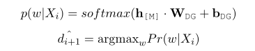
2)Multi-task with Parallel MLM
MLM全称masked language model，遮蔽语言模型,通过并行BDG和P-MLM来训练模型让模型有更好的效果。

上图中左边的sequential MLM就是之前提到的BDG，BDG模型是一个词接一个词的预测，P-MLM是对所有的masked token进行预测，最后的损失函数是这两者相加2，公式如下：


作者如此设计的思路是：BDG可能会忽略整体语义语义信息，但是会过拟合单个词预测。那么并行一个P-MLM可以防止过拟合。
3)Answer Negative Regularization
目前机器预测的distractor和answer有很高的相似度，下面一张表可以展示相似度。其中PM表示机器，Gold表示人工，作者将这类问题称为answer copying problem。
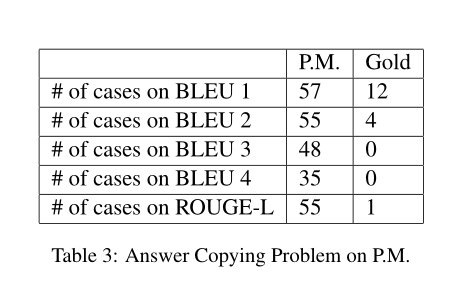
为了解决这个问题，作者提出了answer negative loss来让机器更多的选择与answer不同的词来表示新的distractor，公式如下：

可以看出BDG的loss替换成了AN的loss，每一项都减去了Answer negative loss。
Multiple Distractor Generation
1)Selecting Distractors by Entropy Maximization
选择语义不同的distractor set。文章借鉴了MRC3的方法，让BDGmodel生成很多distractor组成 $\hat{D}$ = {$\hat{d}$1, $\hat{d}$2, $\hat{d}$3…}，然后找出最好的一组选项，一般情况下由三个误导选项和一个答案组成。选择的一句是最大化下面这个公式：

2)BDG-EM
我们可以通过不同的BDG模型来生成不同的误导选项最后组合，不同的模型区别是有没有answer negative/multi-task training，比如我们有这几个模型:$\hat{D}$,$\hat{D}$PM,$\hat{D}$PM+AN，它们分别代表含PM4和含AN5

Performance Evaluation
1)datasets
RACE,沿用了Gao那篇论文的处理,后面也会梳理那篇论文

2)implementation details
- tokenizer: wordpiece tokenizer
- framewordk:huggingface trainsformers
- optimizer:adamW(lr:5e-5)
- github_url: BDG
3)compared methods
比较了不同的distractor generation
4)token score comparison
BLEU和ROUGE(L)两种判断指标

copying problem的效果

5)MCQ Model Accuracy Comparison
与回答系统相结合，将生成好的选项（一个正确答案三个误导选项）放入MCQ answering model，下面是回答正确率的表格

可以看出作者的模型选项的误导性还是很高的。
6）Parameter Study on γ
之前使用P-MLM并行训练时候有个权重参数γ，下表显示了不同γ值的影响，对于只有PM的模型来说，γ=6，对于既有AN和PM来说，γ=7
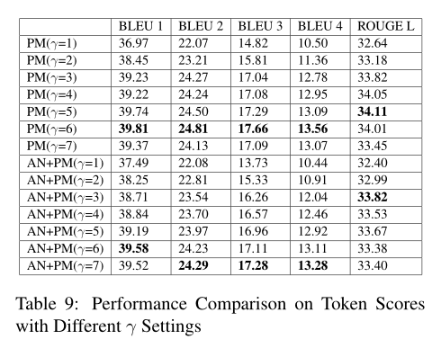
Conclusion
现存的DG可以分为cloze-style distractor generation和 reading comprehension distractor generation，前者主要是word filling，后者主要看重语义信息，基于两者的设计出了很多模型，目前来看还是考虑语义信息生成的误导选项更好。
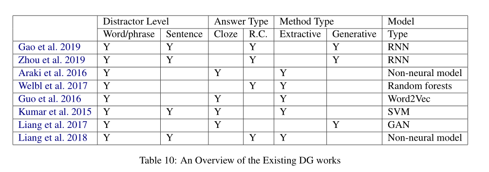
我的看法
文章中的模型提到了三种技术，第一是bert预训练模型使用。第二是P-MLM的并行使用， 它的使用让模型可以考虑段落的语义信息，那么生成的误导选项是sentence-level而不是之前模型所使用的类似word-filling这种word-level。第三是Answer negative loss的使用，它的使用相当于让模型不要考虑与正确答案语义很接近的误导选项，因为目前大多数DG生成多个选项时语义与正确答案都非常接近，这与实际情况不符，同时也起不到误导的作用。
同时文章提出了生成多个误导选项时使用不同模型生成的误导选项拼在一起作为选项是一种比较好的解决方法，让一次性生成多个误导选型有了一定的可用性。
文章的代码开源，可以去github上看训练细节和网络结构细节。
第二篇
Title
Better Distractions: Transformer-based Distractor Generation and Multiple Choice Question Filtering
Author
Jeroen Offerijns, Suzan Verberne, Tessa Verhoef
Abstract
运用GPT2模型生成三个误导选项，同时用BERT模型去回答这个问题，只挑选出回答正确的问题。相当于使用了QA作为一个过滤器(QA filtering)。
Method
作者使用了Question generation model, distractor generation model和question answer filter，作者将从这三方面介绍，下图是大概的流程图。

1)question generation
- 预训练模型：GPT-2
- 数据集：English SQuAD
- tokenizer：Byte-Pair-Encoding(BPE) tokenizer
- optimizer:Adam
- 下图展示了QG的输入，黑框内被tokenizer标记为特殊词元

2)distractor generation
- 预训练模型：GPT-2
- 数据集：RACE
- tokenizer:BPE6
- 使用了repetition penalty技术，保证了尽量不会生成相似的text，并且过滤到那些不好的生成（比如生成了空字符串）
- 输入：经典的C(context)，A(answer),Q(question)，下图展示了输入格式
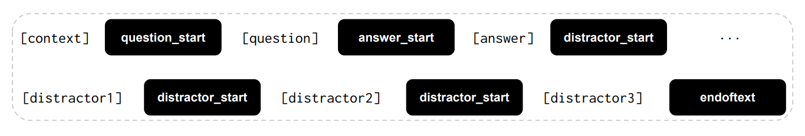
3)QA filtering
- 预训练模型：DistilBERT
- 网络结构：CQA7输入到distilbert，再连接一个dropout，全连接层和softmax，最后输出一个答案，具体结构如下图

Results
1)quantitative evaluation
下表中展示了和上一篇论文类似的指标,与现有的模型进行了比较：SEQ2SEQ,HSA8和CHN9。可以看出BLEU明显要比之前模型要好，但是ROUGE没有之前的高。

2)question answering ability
用GPT-2模型生成误导选项再输入到QAmodel中，具体结果见下图。
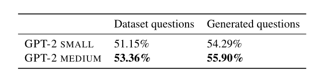
3)human evaluation
人工评估，从两方面评估distractor生成的好坏：
- Is the question well-formed and can you understand the meaning?
- If the question is at least understandable, does the answer make sense in relation to the question? 评估过程中，使用了155个没有经过QA筛选和155经过QA筛选的，了解一下QA过滤模型的效果。整体来说QA过滤器还是有一点效果，具体结果如下：
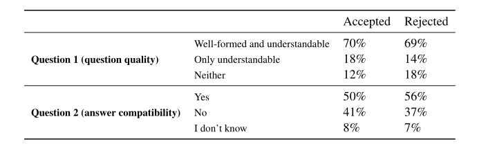
conclusion
我认为作者使用的DG模型主要有两大特色，一个是使用了GPT2预训练模型，目前使用基于transformer的模型已经成为主流。第二个是使用了QA过滤器来筛选掉回答错误的，有一定提升但不显著。
第三篇
Title
Generating Distractors for Reading Comprehension Questions from Real Examinations
Author
Yifan Gao, Lidong Bing, Piji Li, Irwin King, Michael R. Lyu
Abstract
上面两篇文献都有提到这篇文章。作者使用了Hierarchical encoder-decoder framework with static and dynamic attention mechanisms来生成有语义信息的误导选项。使用了编码器-解码器结构网络和静态和动态注意力机制。
Framework Description 网络结构
1)Task Definition
输入：文章，问题和答案。P代表文章，s1,s2,s3…表示不同的句子，q和a分别表示问题和答案，那么我们的任务是生成误导选项$\overline{d}$。

2)Framework overview
网络结构如下图所示，下面将从各个组成部分分别介绍：
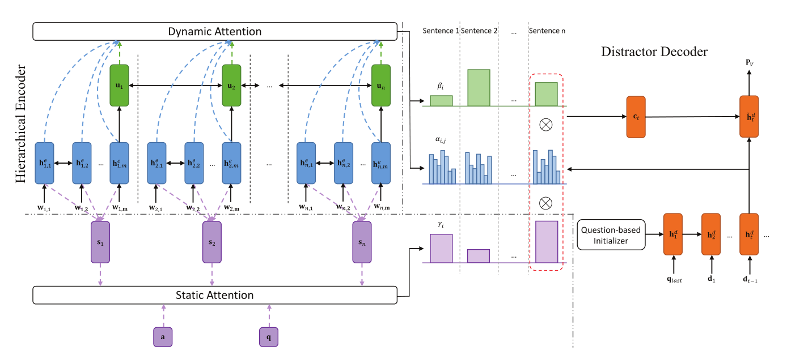
3)Hierarchical encoder
- word embedding:词嵌入，将每个句子si中的每个词元变成词向量(wi,1,wi,2,wi,3…)
- word encoder:将句子si的词向量(wi,1,wi,2,wi,3…)作为输入，用双向LSTM作为编码器，获得word-level representation hi,je

- sentence encoder:将word encoder中每个句子正向LSTM的最后一个隐藏状态和反向LSTM的最开始的隐藏状态作为输入到另一个双向LSTM中获得sentence-level representation(u1,u2,u3…)
4)static attention mechanism
目的：生成的误导选项必须和问题Q语义相关，但是和答案A必须语义不相关。我们从(s1,s2,s3…)学习到句子的权重分布(γ1,γ2,γ3…)，然后将问题q和答案a作为query。
5)encoding layer
我们希望把问题q，答案a和句子s都变成一样的长度的向量表示，也就是上图中紫色虚线部分。对于q和a，我们用两个独立的双向LSTM来获得(a1,a2…ak)和(q1,q2…ql)，然后用平均池化层平均一下：

对于句子s，我们不用u而用h：
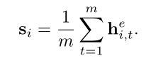
6)matching layer
目的：加重与问题q有关的句子，减轻与答案a有关的句子。oi表示不同句子的importance score

7)nomalization layer
目的：有些问题q和一两个句子有关，而有些问题q和很多句子有关，比如summarizing，下面的τ(temperature)就是这个作用

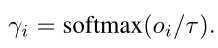
作者介绍static attention mechanism用了很大篇幅
8)distractor decoder
解码器使用的也是LSTM，但是并没有使用编码器的最后一个隐藏状态作为初始状态，而是定义了一个 question-based initializer来让生成的误导选项语法和问题q一致
9)question-based initializer
定义了一个question LSTM来编码问题q，使用最后一层的cell state和hidden state作为decoder初始状态，同时输入qlast，表示问题q的最后一个词元。
10)dynamic hierarchical attention mechanism
常规的注意力机制将一篇文章作为长句子，然后decoder的每一个时间步都与encoder中所有的hidden state进行比较，但是这种方法并不适合目前的模型。原因：首先LSTM不能处理这么长的输入，其次，一些问题只与部分句子有关。
目的：每个decoder时间步只关注重要句子，作者将这种注意力机制称为动态注意力机制，因为不同的时间步，word-level和sentence-level 注意力分布都不同。
每一个时间步的输入是词元dt-1和上一个隐藏状态ht-1

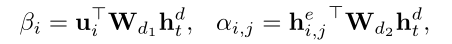
α和β分别表示word-level,sentence-level权重，最后使用之前静态注意力机制获得的γ来调节α和β
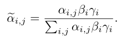

获得上下文变量ct
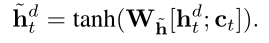
获得attention vector $\tilde{h}$
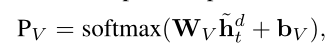
11)training and inference
损失函数：
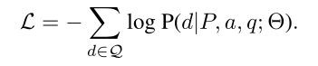
生成多个误导选项的方法是束搜索，但是生成的误导选项很相似，作者做了相应的处理方法，但我觉得效果还是很差
experimental setting 实验设置
1)dataset
RACE数据集，作者做了相应的处理，去掉了很多不合理的和语义不相关的，作者的处理标准是：对于误导选项中的词元，如果它们在文章中出现的次数小于5次，那么将被保留，同时去掉了那些需要在句子中间和句子开始填空的问题。下表展示了处理后的数据集的一些信息：
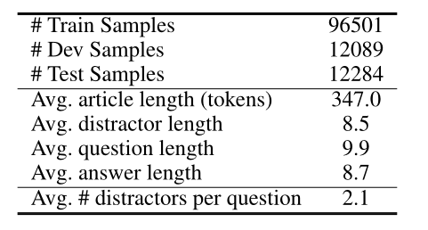
2)implementation details
词表：保留了频率最高的50k个词元，同时使用GloVe作为词嵌入预训练模型。其他的细节都可以在文章中看见，这里不一一列出了，主要是超参数的设置。
3)baselines and ablations
与HRED10和seq2seq比较
results and analysis 结果与分析

人工评估：

大致过程是这样：四个误导选项，分别来自seq2seq，HRED，作者的模型和原本的误导选项，让英语能力很好的人来选择最适合的选项，得出的结果可以发现，作者的模型生成的误导选项拥有最好的误导效果。
下图直观展示了static attention distribution：

我的看法
这篇文章应该是第一个提出用处理后的RACE数据集来处理MCQ问题，处理后的RACE数据集在后面也有很多文献用到，这篇文章使用了seq2seq网络结构同时使用了静态和动态注意力机制，对于网络结构和注意力机制的解释非常完全和详细，虽然这篇文章的效果放到现在来看可能不是最好了，但是它提出来的评估标准可能会成为一个通用的标准。它的数据集和训练代码在github上也完全开源。
第四篇
Title
Co-attention hierarchical network: Generating coherent long distractors for reading comprehension
Author
Xiaorui Zhou, Senlin Luo, Yunfang Wu
Abstract
这篇文献是针对上一篇Gao的文章(seq2seq)所作的改进。本篇文章提出了Gao的模型的两个问题：1.没有建立文章和问题的关系，他的解决方法是使用co-attention enhanced hierarchical architecture来捕获文章和问题之间的关系，让解码器生成更有关联的误导选项。2.没有加重整篇文章和误导选项的关系。作者的解决思路是添加一个额外的语义相关性损失函数，让生成的误导选项与整篇文章更有关联。
Proposed Framework 网络结构
1)notations and task definition
article T=(s1,s2…sk)，一篇文章有k个句子s，同时每个句子都有不同的长度l，si=(wi,1,wi,2…wi,l)，每个文章有m个问题和z个误导选项，Q=(q1,q2…qm),D=(d1,d2…dz),我们的任务是根据输入的T和Q生成D
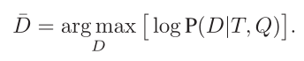
2)model overview
整体结构如下图所示，下面将从各个部分分别介绍：
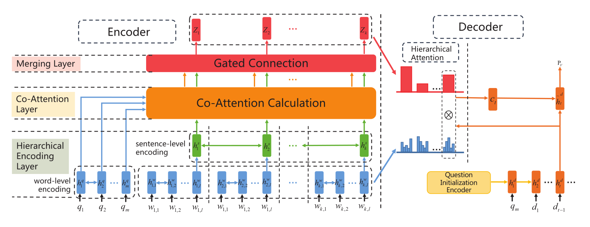
3)encoding article and question
文章和问题的编码器结构
- hierarchical article encoder 双向LSTM，和上一篇结构很像，很多部分我就简单列个式子。
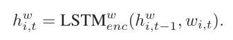
每一句最后的词元来表示整个句子
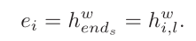
sentence-level encoder：
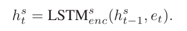
同样，用最后一个句子来表示整篇文章
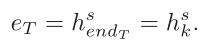
用H*来作为sentence-level representation of article,我们有H:t*=hts
这样，通过使用两个双向LSTM获得word-level encoding和sentence-level encoding
- question encoder
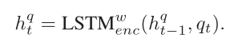
用U*来作为word-level representations of question, 我们有U:t*=htq
4)Co-attention between article and question
Co-attention mechanism就是使用了两个方向的注意力机制，有从article到question的，也有question到article的。
用一个“相似”矩阵S表示H和U的关系：
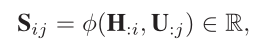
Si,j就表示第i个句子和第j个问题词元的相似性
我们可以获得两个特殊的矩阵SQ和ST
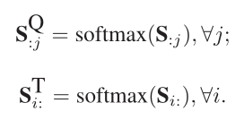
- article-to-question attention
$\tilde{U}$:j = $\sum$ Si,jQU:,i - question-to-article attention
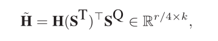
最后，将问题的词级表示H，两个方向的注意力结果$\tilde{U}$和$\tilde{H}$结合一下获得G
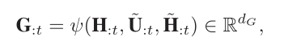
5)Merging sentence representation
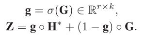
Z表示final representation of sentence-level hidden states
6)question initialization
接下来就进入decoder环节，这里的question initialization和上篇文献处理方法相同
7)hierarchical attention
不同时间步有不同的句子相关，和上篇文献的处理方法动态注意力机制相同。
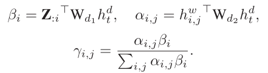
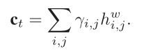
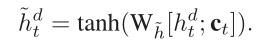
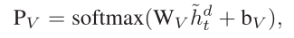
8)semantic similarity loss
目的：获得文章和误导选项的关系。还记得之前定义的eT吗，它表示整篇文章，那么我们通过下面的公式可以获得distractor representation:
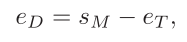
其中SM是decoder最后一个隐藏状态，那么我们通过cos计算相似关系，那么最终的损失函数
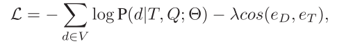
Experimental Settings
1)dataset
使用了上篇文献处理过的RACE数据集。
2)baselines and evaluation metrics
3)implementation details
网络超参数设置技巧，不展开了
Results and Analysis 结果与分析
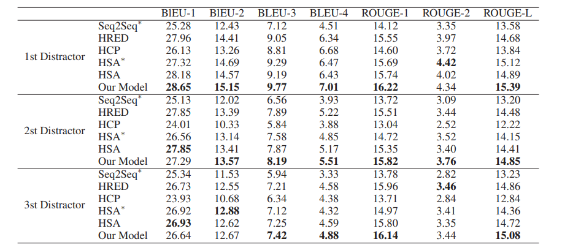
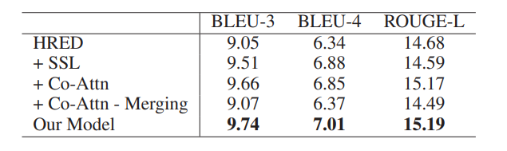
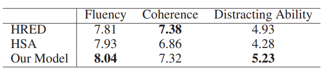
介绍一下上面这张表，这张表是人工评估的结果，从三个维度分析，分别是fluency,coherence,distracting ability。可以看出作者的模型并不是在所有维度都是最好的。
下图是案例分析：
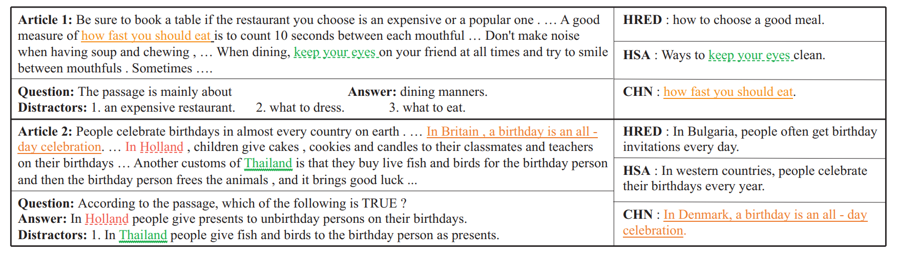
我的看法
这篇文献是基于上一篇文献的方法进行了两个改进：1.关联了整篇文章和问题，解决方法是使用了Co-attention mechanism。2.让distractor和article语义相关，方法是定义了相关性loss。
补充
RACE数据集简介
RACE数据集是一个来源于中学考试题目的大规模阅读理解数据集，包含了大约 28000 个文章以及近 100000 个问题。它的形式类似于英语考试中的阅读理解（选择题），给定一篇文章，通过阅读并理解文章（Passage），针对提出的问题（Question）从四个选项中选择正确的答案（Answers）。
BLEU
BLEU是一个评价指标，最开始用于机器翻译任务，定义如下
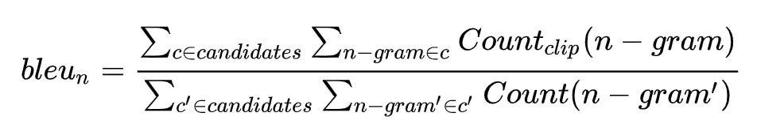
它的总体思想就是准确率，假如给定标准译文reference，神经网络生成的句子是candidate，句子长度为n，candidate中有m个单词出现在reference，m/n就是bleu的1-gram的计算公式。BLEU还有许多变种。根据n-gram可以划分成多种评价指标，常见的指标有BLEU-1、BLEU-2、BLEU-3、BLEU-4四种，其中n-gram指的是连续的单词个数为n。
ROUGE
Rouge(Recall-Oriented Understudy for Gisting Evaluation)，是评估自动文摘以及机器翻译的一组指标。它通过将自动生成的摘要或翻译与一组参考摘要（通常是人工生成的）进行比较计算，得出相应的分值，以衡量自动生成的摘要或翻译与参考摘要之间的“相似度”。它的定义如下：
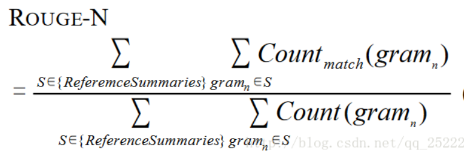
文献中使用的ROUGE-L是一种变种，L即是LCS(longest common subsequence，最长公共子序列)的首字母，因为Rouge-L使用了最长公共子序列。Rouge-L计算方式如下图：
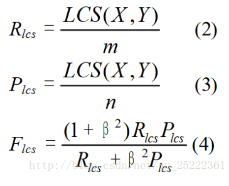
其中LCS(X, Y)是X和Y的最长公共子序列的长度,m、n分别表示参考摘要和自动摘要的长度（一般就是所含词的个数），Rlcs,Plcs分别表示召回率和准确率。最后的Flcs即是我们所说的Rouge-L。
-
distractor generation 误导选项生成，简称DG ↩
-
当我们test时，只需要Sequential MLM decoder来预测。 ↩
-
multi-choice reading comprehension (MRC) model ↩
-
P-MLM ↩
-
Answer negative ↩
-
Byte-Pair-Encoding ↩
-
context，question，answer ↩
-
hierarchical encoder-decoder model with static attention ↩
-
hierarchical model enhanced with co-attention ↩
-
hierarchical encoder-decoder ↩
-
相当于HRED+copy,是基于HRED的网络结构 ↩
-
就是上篇文献的网络 ↩

Comments